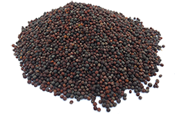
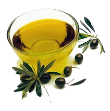

Cooking Oils
Cooking Oils:

In canola production, uniformity is key to success. A uniform crop has more potential to withstand weed, insect and disease pressure, while a non-uniform crop is difficult to gauge for pesticide application, swathing and crop dry-down. Crop rotation, trash management, seedbed preparation, seeding date, seeding rate, fertility and weed control are crucial to uniform crop establishment.
By design, early crop management is the focus of much of this publication. Successful canola production relies on providing the crop with all the requirements for establishment. Canola requires a uniform, vigorous young stand for optimum final yield.
Canola is a very small seeded crop and requires assistance to uniformly reach the true leaf stage. Proper residue management of the preceding crop is essential. Uneven residue distribution means soils warm unevenly and subtle changes in soil temperature may result in patchy germination. In addition, residue conserves moisture, areas with less trash may dry out faster also resulting in patchy germination.
Variety selection is very difficult due to the proliferation of newly registered lines. This publication does not evaluate individual lines, but identifies 10 factors to consider in variety selection. Individual producers must decide which factors are most important to their operation, and match a canola variety to those criteria. For performance data of individual varieties, consult ‘Varieties of Grain Crops’ in the Saskatchewan Seed Guide.
Canola Oil:

Canola oil is a common vegetable based oil generally used today as a cooking oil. It is derived from rapeseed crops. Canola was developed in Canada in the 1970s as a hybrid rapeseed by reducing the erucic acid content in common rapeseed. The name Canola was applied to the modified seed to avoid negative connotations associated with the term rape.
Canola is predominantly grown in North America where approximately 10 million tonnes is produced annually. Production is split roughly evenly between Canada and the United States. Canola oil ranks as the third highest in terms of global vegetable oil consumption.
Processing of rapeseed into oil involves heating and crushing the seeds to extract the oil. The oil is further refined to achieve a golden color and relatively odorless final product. The by-product of canola oil is a meal that is used as livestock feed. Approximately 45% of the seed is oil.
Canola Meal:

Canola meal is one of the most widely used protein sources in animal feeds. It has an excellent amino acid profile and it's rich in vitamins and essential minerals. It is palatable and non-toxic.
Canola seed is traditionally crushed and the solvent extracted in order to separate the oil from the meal. This process, called pre-press solvent extraction, usually includes:
.1seed cleaning
.2 seed pre-conditioning and flaking
.3 seed cooking
.4 pressing the flake to mechanically remove a portion of the oil
.5 solvent extraction of the press-cake to remove the remainder of the oil
.6 desolventizing and toasting of the meal.
.7 Meal quality is influenced by several variables during the process, especially
temperature.